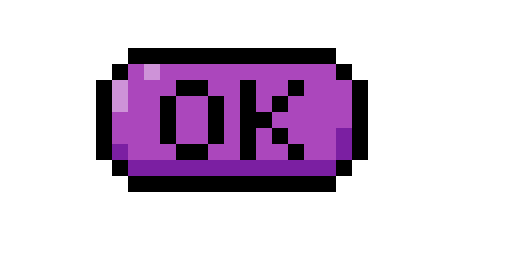

AVISO: Devido a uma questão de falta de habilidade e experiência dos criadores (que não tem noção alguma de HTML ou CSS), nós tivemos que fazer um jogo alternativo ao “Células: CANCER!” Desta vez um pouco mais simples, espero que gostem.
QUESTÃO 1
Qual a função dos neurônios?
Resposta correta: D - Conduz impulsos nervosos.
QUESTÃO 2
Quais células compõem a Glia?
Resposta correta: A - Microglia, astrocitos, oligodendrocitos, células de schwann.
QUESTÃO 3
O que compõe o sistema nervoso periférico?
Resposta correta: C - Gânglios e nervos.
QUESTÃO 4
Qual a função da bainha de mielina do neurônio?
Resposta correta: B - Ajudar o neurônio a conduzir impulsos elétricos com mais velocidade e precisão.
QUESTÃO 5
De qual célula o tecido nervoso se origina?
Resposta correta: A - Ectoderme.
QUESTÃO 6
O que é o ato reflexo?
Resposta correta: B - Ato involuntário comandado pela medula espinhal.
QUESTÃO 7
A bexiga é um belo exemplo de qual tipo de músculo?
Resposta correta: D - Músculo liso.
QUESTÃO 8
Para que um movimento ocorra, a Actina deve deslizar sobre a miosina. Verdadeiro ou falso?
Resposta correta: B - Falso. A miosina deve deslizar sobre a actina.